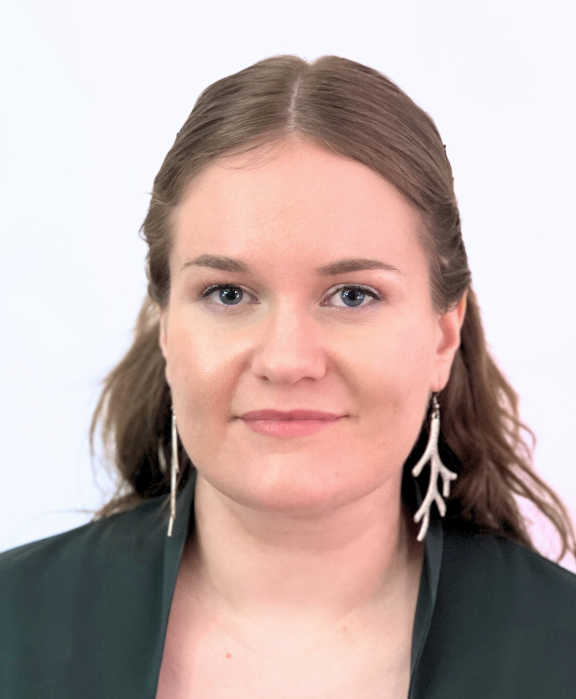
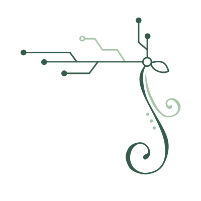

I turn ideas into content that people notice, understand and remember.
I combine content creation, audiovisual communication, and project coordination. I create content across text, image, and video, while keeping the bigger picture in focus. I’m particularly interested in creating content that feels consistent and recognizable across different platforms.
I’m a structured and hands-on person who enjoys making things happen. I like planning projects, organizing moving parts, keeping track of details, and making sure ideas turn into finished results. I enjoy developing concepts, finding the right visual approach, and creating content that communicates clearly. I work independently, take ownership, and learn new tools and processes quickly.
I’m looking to grow as a communications professional in Lapland with a role where creativity and organization skills are needed.
2025
Master of Arts
Major: Audiovisual Mediaculture
University of Lapland
2022
Bachelor of Arts
Major: Audiovisual Mediaculture
University of Lapland
Communication
Writing
Teamwork
Organisation & planning
Time management
Independent working
Attention to detail
Graphic design
Photography
Video editing
Web design
HTML & CSS
Animation
Drawing & illustration
Design & Illustration
Inkscape · Krita · Canva · Photoshop
Video Editing
DaVinci Resolve · Premiere Pro · After Effects
Animation
Adobe Animate
Web
Adobe Dreamweaver · Visual Studio Code · HTML · CSS
Finnish — Native
English — Fluent